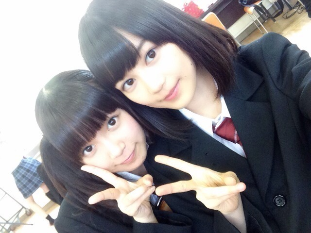
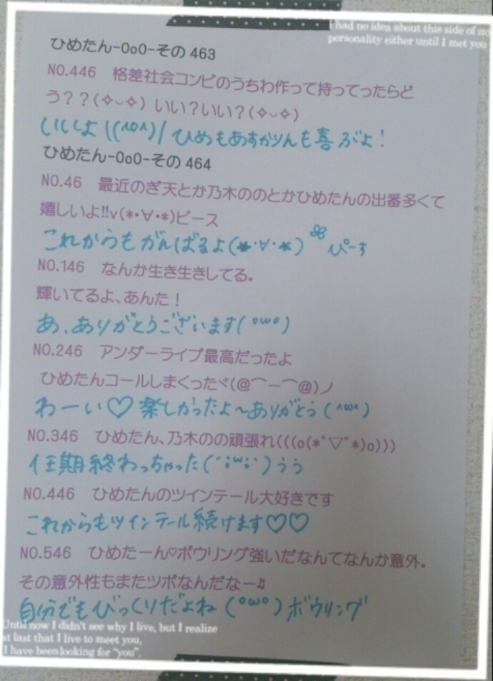

| 2014/10 23 Thu | ひめたん-OoO-その491 |
更新500までもうちょっと～

UTBさんにソログラビア
撮っていただきました\( ˆoˆ )/
UTBさんは1年ぶり！
去年のと見比べてみても
楽しいかもしれません～
撮影はとっても楽しかった♡♡
全てが私好みの企画\( ˆoˆ )/
10月24日発売のSamuraiELOさん
チェックしてみてください！
こちらは普段のひめたんとは
違った雰囲気で
撮っていただきました⊂( ˆoˆ )⊃
オフショットは次回の日記で載せるから
待っててね～\❁/

アンダーライブが終わって一段落。
この前のオフは久々に
おともだちとごはん食べたよ(＊´ω`＊)
なんだか、おともだちと
一緒に話していると
リラックスするんだよね❁
アイドルでいることを忘れて
ひとりのおにゃのこに戻る瞬間。
たまにこーゆー時間があるから
よしお仕事も頑張ろうって
なるんだよねーきっと！
みんな頑張ってるから
負けてられないなって思った1日でした。

私ちょっと下手ね(ノ)･ω-(ヾ)
ホットドリンクの季節、
もふもふのお洋服が気になる季節。
りぼんも秋冬の素材が役に立つ季節！
体調も崩しやすい季節かな？
みなさんお気をつけて(´・ω・｀)

 ひめたんにとってライブとは？
ひめたんにとってライブとは？
パフォーマンスするのが好きな私にとって
ライブ会場やステージの上は
ひとつのメインフィールドです。
ポムポムプリンカフェがオープンする
らしいけど、ひめたんは行く？
これたくさんのひとが 教えてくれた
タイミングが絶妙すぎてもうっ！！
行けたら行きたいけれどひとりはな～
一緒に来てくれるひと......いないかな
よくぷりんにお醤油かけたら
うにの味になるって聞くけれど、
ひめぷりんにお醤油かけたら、、
どんな味になるんかな？なーんて
うにが好きじゃないから
あんまりやる気にならんねそれ(´ºωº `)
私にお醤油？ぶっ飛ばしますね♡♡
 ひめたんってスマホカバー
ひめたんってスマホカバー
どんなの使ってる？☆
今はカバーなしなの～
なかなかカバー見つからなくて
探してるところなんだ(´・ω・｀)
ひめたんの日記の
コメント欄下２ケタに46を踏んだ方へ
手書きでコメ返するコーナー
＼ ひめたん46 ／

いつもたくさんのコメント
ありがとうございます！
3人の卒業は本当に悲しい......
みなさんのコメントからも
伝わってきました(；ω；)
ライブの感想もいっぱいありがとう♡
受験生さんは大変な時期みたい。
最後まで応援してます！
弱虫ペダルは
御堂筋くん一押しだけど
青八木くんも好き♡
「あ！いま喋った～！！」
ってなる(っ´ω`c)笑
#3は御堂筋くん回だし
青八木くん一生懸命叫んでたし
もう！もうっ！！
あとはーそうだな
スクフェスは凛ちゃんイベ頑張ってます
凛ちゃーん( ´ ▽ ` )
メイクさんに借りてた
月刊少女野崎くんのコミックも
やっと読み終わったの～
アニメにはないお話もあって
面白かったよ！
ひとりでクスクス笑ってた←
(＊´・ω・＊)
コメント(673)
2014/10/23 23:48